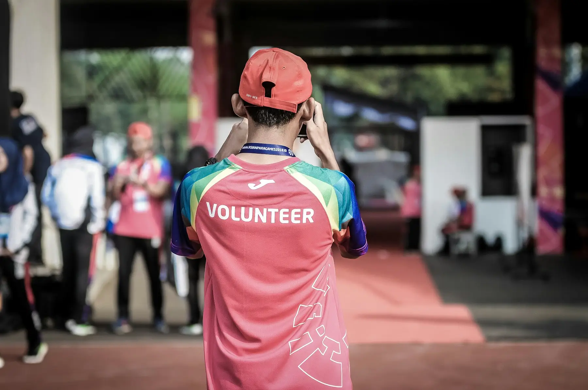
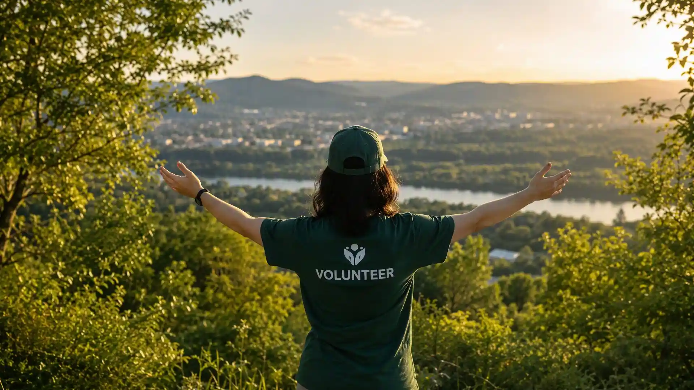
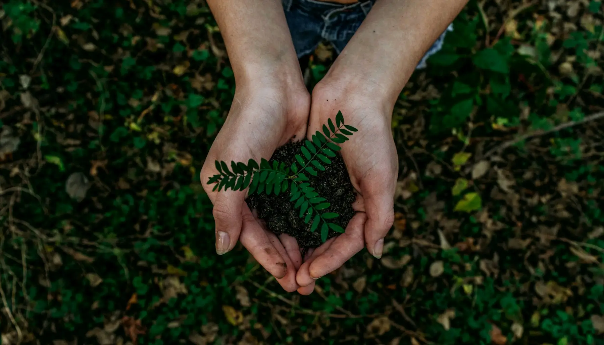
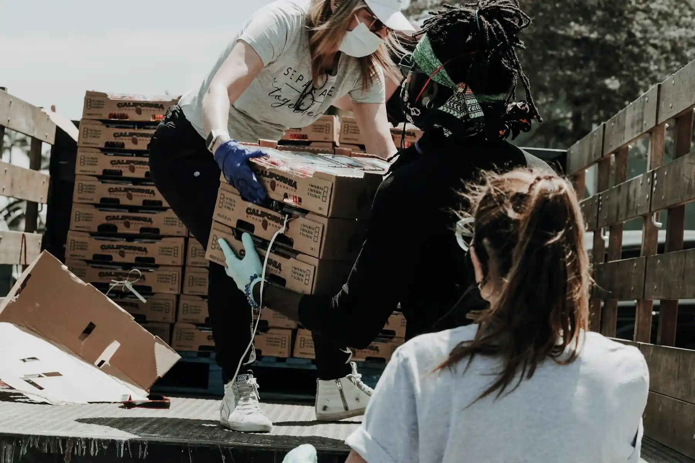
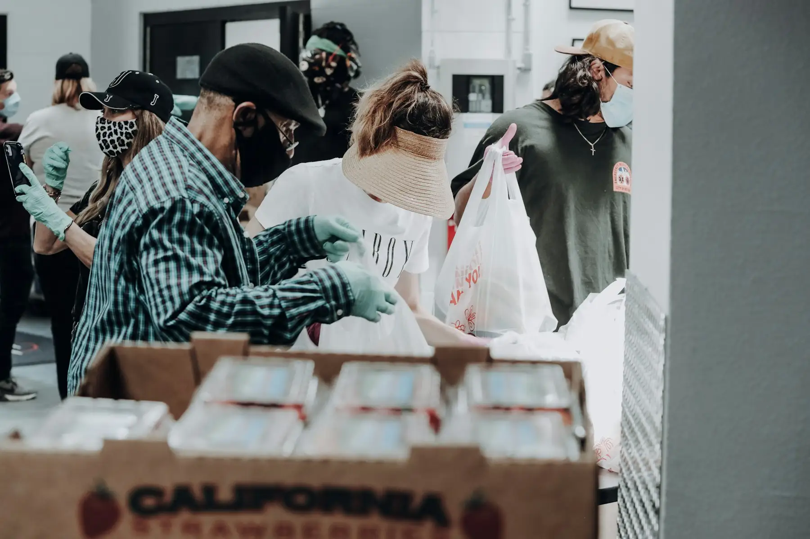
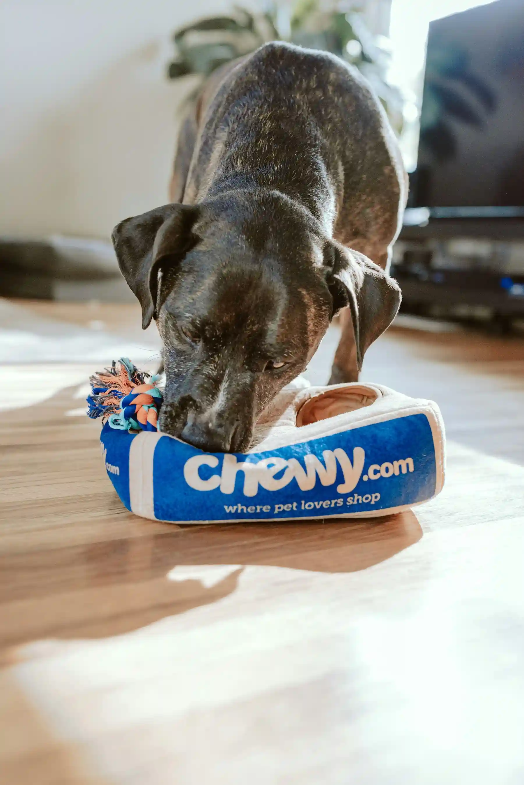
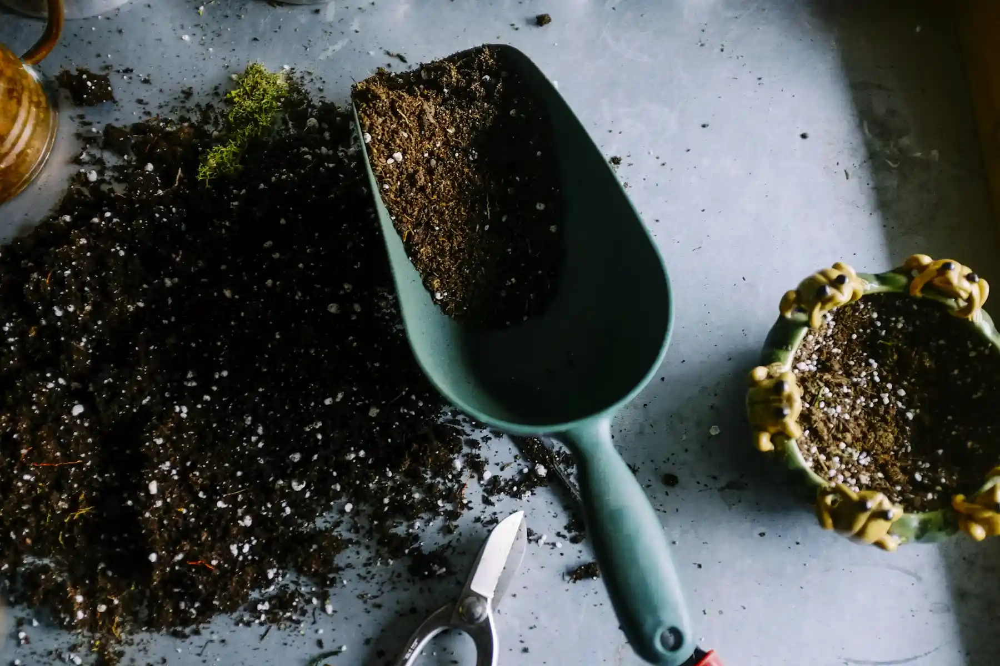
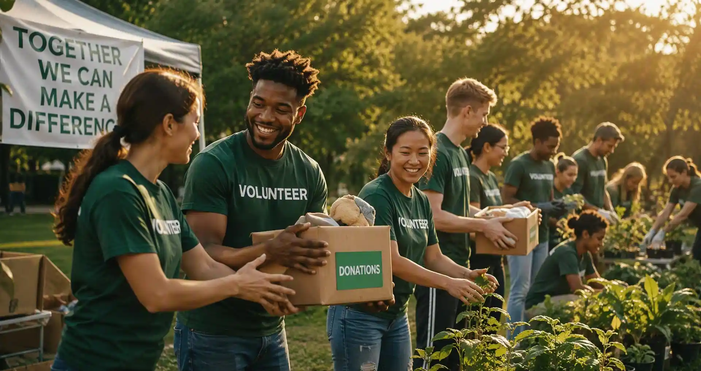

01Community Development
Neighbourhood clean-ups, skill workshops, and local initiatives that lift whole streets.
Learn More
Join hands to make a real difference. Volunteer with Stackly and be part of meaningful change in communities across India and beyond — together, for a better tomorrow.
Together, we make a difference
Stackly brings people together to volunteer, contribute skills, support communities, and create meaningful change. We believe stronger communities start with people who care — and that a few honest hours can change the shape of someone's week, or their life.
From tree plantations to classroom mentorship, from food drives to flood relief, our volunteers show up where it matters most.
Our storyEight programs, one shared goal — stronger communities. Choose the cause that moves you, and we'll help you start.

01Neighbourhood clean-ups, skill workshops, and local initiatives that lift whole streets.
Learn More
02Tree plantations, lake restorations, and green drives that give nature room to breathe.
Learn MoreWeekend classes, career guidance, and one-on-one mentoring for first-generation learners.
Learn More
04Community kitchens, ration kits, and essentials drives for families facing hard weeks.
Learn MoreHealth camps, screenings, and awareness sessions that reach the last mile first.
Learn MoreSkill circles, leadership clubs, and safe spaces where confidence becomes capability.
Learn More
07Rapid-response teams for floods, cyclones, and emergencies — trained, equipped, ready.
Learn More
08Rescue support, shelter drives, and habitat care for the voiceless neighbours we share cities with.
Learn MoreWe make volunteering simple, structured, and deeply human — so your time turns into change you can actually see.
Every opportunity is vetted and mapped to real community needs — never busywork, always meaning.
Programs run in 40+ cities, so the change you create is often a short ride from your doorstep.
You never volunteer alone. Teams, coordinators, and local partners stand behind every drive.
Earn certificates, build leadership skills, and track your hours and impact from your dashboard.
Browse eight programs and pick the one that speaks to you.
Create your volunteer profile in under two minutes.
Get matched with a local team, event, or initiative.
Show up, contribute, and see the difference first-hand.
Track your hours, earn certificates, inspire others.

22SepJoin programs, events, and teams — a few hours a week is enough to matter.
Fuel a food drive, a classroom kit, or a sapling nursery with a one-time gift.
CSR drives, team volunteering days, and co-created community programs.
Underwrite a full program — from a lake restoration to a mentorship year.
Register on the website, choose a cause you care about, and pick an orientation slot. Our coordinators will match you with a local team — most volunteers are active within a week.
Volunteers aged 16+ can join independently. Younger volunteers (10–15) are welcome at family-friendly events with a parent or guardian.
Not at all. Every event begins with a short briefing, and experienced team leads are always on site. Bring willingness — we'll handle the rest.
Yes. Mentorship, content, design, translation, and coordination roles can all be done remotely. Filter for "remote-friendly" when choosing a program.
Pick any event from the Upcoming Events section and tap "Join Event". Once registered, you'll receive the meeting point, schedule, and what to bring.
Absolutely — friends, families, and corporate teams regularly volunteer together. Write to us and we'll design a group day around your team size.
Yes. We co-create CSR programs, sponsorships, and team volunteering days with companies, colleges, and civic bodies. Reach out via the contact page.
Message us through the contact form with "Donate" as your interest, and our team will share current campaigns, usage reports, and receipts.
Local coordinators map real community needs each quarter. Programs are chosen for measurable impact, safety, and sustainability — then opened to volunteers.

Whether you have an hour, a skill, or simply the willingness to help, there is a place for you at Stackly.